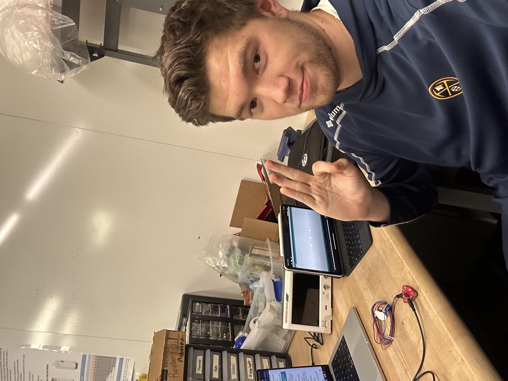
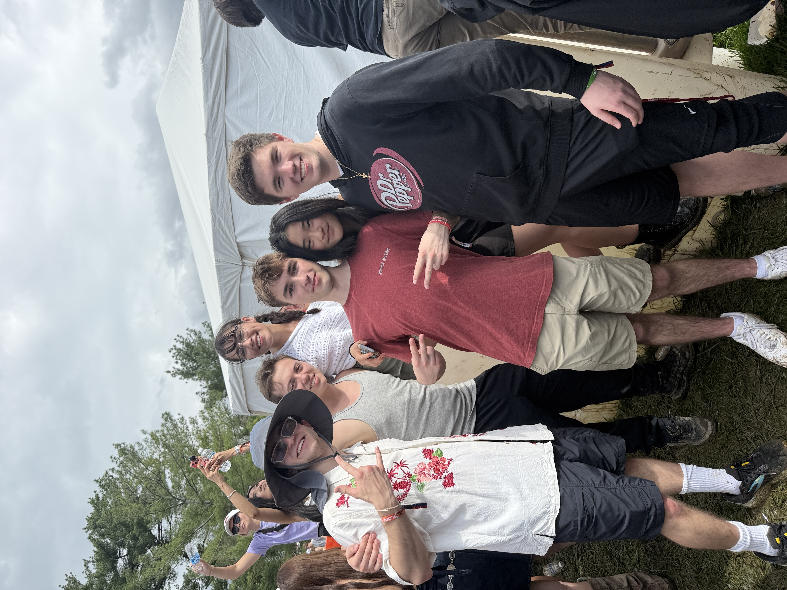

Who I Am
I am an electrical and computer engineering student with a strong interest in applying hardware design, digital logic, and embedded systems to real-world problems in biotechnology and data-driven systems. My work focuses on building practical engineering solutions that combine electronics, software, and data analysis to better understand and interact with complex physical systems. Most of my experience comes from hands-on projects that bridge hardware and software together, such as biomedical sensing devices and industry-level large-scale data visualization tools, and through both these projects and my extensive coursework at Cornell University, I have gained experience with both circuit and PCB design, data processing, device ideation and development, and software tools such as Python, SQL, and Verilog.
As an aspiring engineer, I value careful problem solving, attention to detail, and continuous learning, all while enjoying the challenges of the work I do and keeping an open mindset. I aim to build technologies that have meaningful real-world impact, particularly in fields where hardware innovation can improve health and scientific understanding. Using the skills I currently have and the ones I have yet to learn, I hope to make my mark in the world through taking concepts from their initial designs all the way through the engineering process to the implementation and testing stages, refining these systems along the way to make them more reliable and efficient with every step I take. I am always looking to improve, and know that I can make a difference anywhere I end up. Please feel free to explore my projects below, view my resume, or connect with me through LinkedIn or GitHub. Thank you for your time, and I hope to connect with you soon!
More About Me



